Delfines Oscuros
1 Censos
Muchos censos en embarcaciones de oportunidad.
Número de censos por año y estación
| Ano | Spring | Summer | Fall | Winter | TOTAL |
|---|---|---|---|---|---|
| 2007 | 3 | 1 | 2 | 5 | 11 |
| 2008 | 1 | 2 | 3 | 3 | 9 |
| 2009 | 1 | 2 | 0 | 3 | 6 |
| 2010 | 0 | 1 | 1 | 2 | 4 |
| 2013 | 0 | 1 | 0 | 0 | 1 |
| 2014 | 2 | 0 | 1 | 2 | 5 |
| 2015 | 4 | 0 | 2 | 6 | 12 |
| 2016 | 3 | 5 | 4 | 5 | 17 |
| 2017 | 3 | 3 | 3 | 2 | 11 |
| 2018 | 0 | 1 | 0 | 0 | 1 |
Presencia principalmente en primavera y verano.
| season | n.delfines |
|---|---|
| Spring | 304 |
| Summer | 203 |
| Fall | 22 |
| Winter | 3 |
Grupos pequeños

| season | min_group | max_group | mean_group | CV_group |
|---|---|---|---|---|
| Spring | 1 | 25 | 5.2 | 0.9 |
| Summer | 1 | 10 | 3.7 | 0.8 |
| Fall | 3 | 6 | 4.4 | 0.3 |
| Winter | 3 | 3 | 3.0 | NA |
2 Exploratory Data Analysis
2.1 Efecto de barco
2.1.1 Distancia
Hay efecto del barco sobre la distancia a la que se detectan delfines comunes. Considerar incluir en la funcion de deteccion.
Quizás sea efecto del observador en lugar de embarcación, pero no lo podemos distinguir porque no tenemos el ID del observador en los datos.

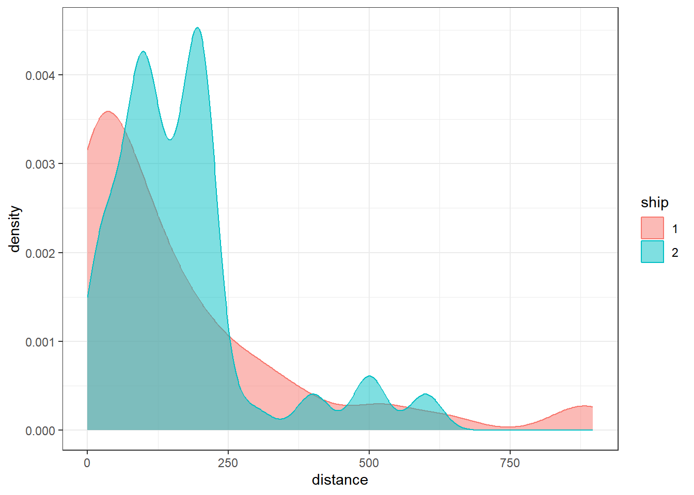
Tamaño muestral, discrimando por embarcación
| ship | n |
|---|---|
| 1 | 51 |
| 2 | 68 |
2.1.2 Tamaño grupal
Barco no parece tener efecto sobre el tamaño grupal detectado
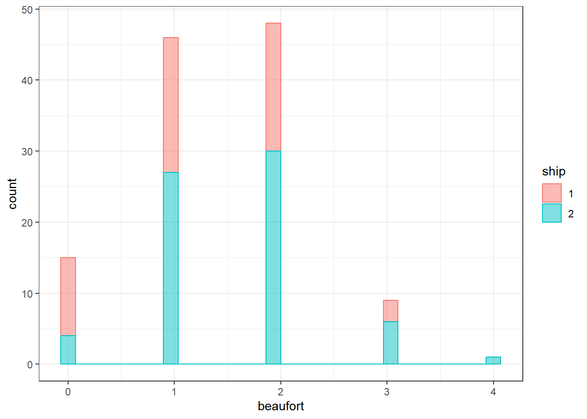
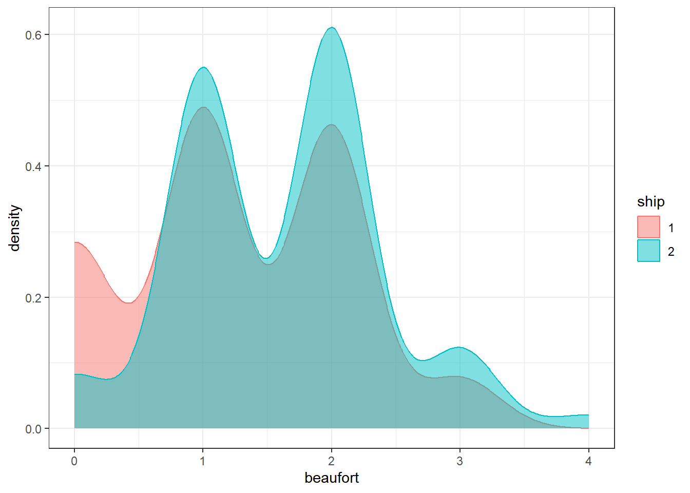
2.2 Estado del mar
2.2.1 Barco
No hay diferencias en el estado del mar en el que se hicieron censos, dependiendo del barco


2.2.2 Distancia
Hay una observacion en Beaufort 4 - considerar descartarla
Hay 2 registros en Beaufort 3 (embarcación 1) a mucha distancia.
Silvana: esto es real? o hay algún problema con los datos?
En caso de incluir Beaufort en la función de detección, probablemente lo mejor sería descartar estos 2 registros - eliminados al truncar los datos

2.3 Numero de observadores efectivos
Numeros definidos por Silvana y Guille

| year | 1 | 2 | 3 | NA | 4 |
|---|---|---|---|---|---|
| 2006 | 1 | 2 | 1 | 1 | NA |
| 2007 | 4 | 6 | 1 | NA | NA |
| 2008 | 3 | 5 | 1 | NA | NA |
| 2009 | 1 | 4 | 1 | NA | NA |
| 2010 | NA | 2 | 2 | NA | NA |
| 2013 | 1 | NA | NA | NA | NA |
| 2014 | NA | 2 | 2 | NA | 1 |
| 2015 | NA | 9 | 3 | NA | NA |
| 2016 | NA | 15 | 2 | NA | NA |
| 2017 | NA | 10 | 1 | NA | NA |
| 2018 | NA | 1 | NA | NA | NA |
2.4 Variables espaciales
2.4.1 Escala: periodo
2.4.1.1 Profundidad
Parece haber mayor cantidad de detecciones en la zona donde aumenta la profundidad - alrededor de northing 5.47 Mm

2.4.1.2 Pendiente
La zona donde hay mas detecciones parece ser donde hay una pendiente mas pronunciada

2.4.1.3 Conclusion escala periodo
Evaluar la incorporacion de pendiente y profundidad en la funcion de deteccion - creo que codifican la misma informacion
2.4.2 Escala mensual
Ninguna de las variables ambientales medidas a escala estacional parece tener relacion con la deteccion de animales
2.4.2.1 Gradiente de temperatura superficial
No parece infuenciar la deteccion de animales

2.4.2.2 Temperatura superficial del mar

2.4.2.3 Clorofila

2.4.2.4 Distancia a upwellings
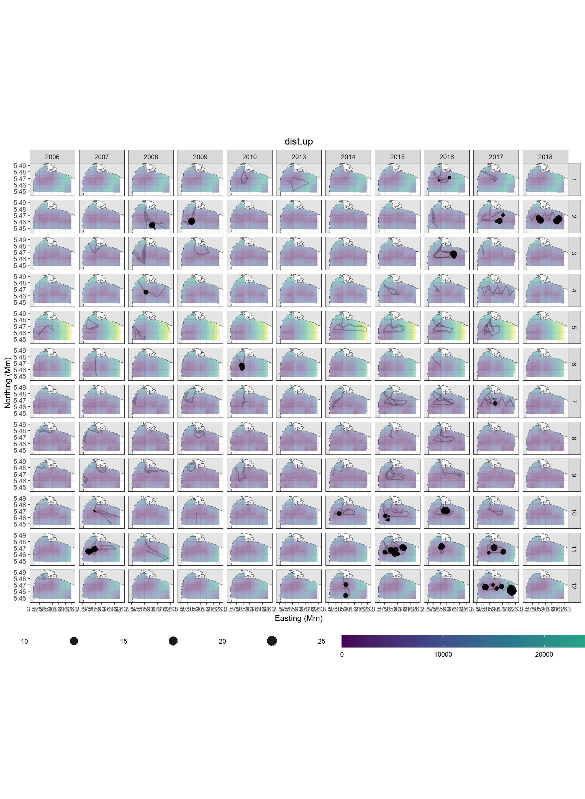
3 Funciones de deteccion
3.1 Datos
Eliminar una observacion con Beaufort = 4
3.2 Funciones de detección básicas
Ajustamos modelos half-normal y hazard rate


3.3 Truncar datos
Los datos tomados a una gran distancia a contribuyen poca información a la estimación de la forma de la función de detección a distancias cortas y puede resultar en un ajuste pobre y con varianza alta. Por ende, es práctica común truncar los datos.
Aquí se grafica el tamaño grupal como función de la distancia a la que fueron registrados. Se detectaron grupos hasta casi 900m de distancia de la trayectoria de la embarcación. Esto es un curioso, dado que los 2 grupos avistados a mas de 850m son de 1 delfín cada uno.

Consejo práctico recibido en curso de Distance Sampling: “consider reducing the truncation distance, w, if more than 5% of the Pa(zi) are <0.2, or if any are less than 0.1”. Probabilidades (Pa) pequeñas tienen mucha influencia en la estimación de abundancia, porque entran en el denominador del estimador Horvitz-Thompson.
Estas son las proporciones de observaciones con diferentes Pa (estimadas usando una función half-normal. 8% de las observaciones son menores a 0.2, y hay 6 observaciones con Pa < 0.1 (no mostrado en la tabla). Por ende, truncar los datos
| bin | n | prop |
|---|---|---|
| (0,0.2] | 10 | 0.08 |
| (0.2,0.4] | 4 | 0.03 |
| (0.4,0.6] | 6 | 0.05 |
| (0.6,0.8] | 26 | 0.22 |
| (0.8,1] | 72 | 0.61 |
Buckland et al. (2001) (p. 16) sugiere truncar donde la probabilidad de detección es ~0.15. Aquí se grafica la función de detección (half-normal). Esta distancia es ~450m. Al truncar a esa distancia, se eliminan 10 datos (~ 8.5% de los datos).

Ajustamos los modelos half-normal y hazard rate con los datos truncados. El modelo half-normal es mas parsimonioso.
| df | AIC | deltaAIC | |
|---|---|---|---|
| lo.df.hn.trun | 1 | 1250.3 | 0.00 |
| lo.df.hr.trun | 2 | 1251.8 | 1.51 |
3.4 Datos agrupados
Idealmente, las distancias transversales desde el trackline deben ser tomadas exactas. Sin embargo, es común que los observadores redondeen las distancias al tomarlas.
Este es un gráfico de las distancias a las que fueron tomadas las observaciones, con la función de detección half-normal (observaciones truncadas a 450). Se ve que las distancias fueron redondeadas en 0, 100, 200, 300, 400.

Buckland et al. (2015) (p. 68)
“The Montrave Case Study: Line Transect Sampling” :
[…] We see from Fig. 5.4 that there is rounding in the data. Seven distances were each recorded four times or more, and all are divisible by 5: 5, 15, 20, 25, 35, 45, 50 m […]
[…] To assess model fit, as distinct from revealing rounding in the data, we would like to select cutpoints both for our histogram and for the χ2 goodness-of-fit test to avoid these favoured distances. Here, we use the following cutpoints: 0, 12.5, 22.5, 32.5, 42.5, 52.5, 62.5, 77.5, 95 m. Note the use of wider intervals at larger distances, where smaller numbers of birds are detected […]
Aquí utilizamos una estrategia similar; elegimos puntos de corte 0, 50, 150, 250, 350, 450.

Ajustamos los modelos half-normal y hazard rate con los datos truncados y aplicando los cutpoints para lidiar con la agrupación de datos. El modelo half-normal es mas parsimonioso.
Utilizar el modelo half-normal.
| df | AIC | deltaAIC | |
|---|---|---|---|
| lo.df.hn.trun.cp | 1 | 299.2 | 0.00 |
| lo.df.hr.trun.cp | 2 | 302.3 | 3.04 |
3.5 Términos de ajuste
Distance allows the selection of three types of series (one type per model)
| Key function | Series adjustment |
|---|---|
| Uniform | Cosine |
| Half normal | Hermite polynomial |
| Hazard rate | Simple polynomial |
Aplicamos los terminos de ajuste a los modelos half-normal y hazard rate
Los modelos half-normal, con y sin termino de ajuste, no pueden distinguirse. Retener el modelo más sencillo.
| df | AIC | deltaAIC | |
|---|---|---|---|
| lo.df.hn.trun.cp | 1 | 299.2 | 0.00 |
| lo.df.hn.trun.cp.herm | 1 | 299.2 | 0.00 |
| lo.df.hr.trun.cp | 2 | 302.3 | 3.04 |
| lo.df.hr.trun.cp.poly | 2 | 302.3 | 3.04 |


3.6 Covariables
Analizamos incluir
- embarcación
- tamaño grupal
- estado del mar (Beaufort)
- numero efectivo de observadores
en las funciones de detección
La función de detección mas parsimoniosa incluye el estado del mar
| df | AIC | deltaAIC | |
|---|---|---|---|
| lo.df.hn.trun.cp.beauf | 4 | 295.5 | 0.00 |
| lo.df.hn.trun.cp.sizebeauf | 5 | 296.9 | 1.37 |
| lo.df.hn.trun.cp.shipbeauf | 5 | 297.0 | 1.49 |
| lo.df.hn.trun.cp | 1 | 299.2 | 3.71 |
| lo.df.hn.trun.cp.size | 2 | 299.9 | 4.38 |
| lo.df.hn.trun.cp.ship | 2 | 301.2 | 5.68 |
| lo.df.hn.trun.cp.sizeship | 3 | 301.9 | 6.37 |
3.6.1 Efecto del estado del mar
Este es un gráfico de la función de detección considerando el efecto del estado del mar - la línea negra es la función de detección promedio.
Nótese que los patrones no siguen el patrón esperado; uno esperaría que con Beaufort 0 la detección a distancia fuese mayor. Sin embargo, es la función con peor detección

Probablemente sea un problema de tamaño muestral discriminado por estado del mar. Hay pocos registros en Beaufort 0, la mayoría de los registros fueron tomados en Beaufort 1 y 2, y las diferencias entre estas 2 curvas es mínima.
| beaufort_fct | n |
|---|---|
| 0 | 14 |
| 1 | 41 |
| 2 | 46 |
| 3 | 7 |
La forma de lidiar con esto es agrupar beaufort 0 y 1 en un grupo y 2 y 3 en un segundo grupo.
Ajustamos los modelos nuevamente. El modelo mas parsimonioso no incluye ninguna covariable
| df | AIC | ll | deltaAIC | |
|---|---|---|---|---|
| lo.df.hn.trun.cp | 1 | 299.2 | -148.6200 | 0.00 |
| lo.df.hn.trun.cp.size | 2 | 299.9 | -147.9568 | 0.67 |
| lo.df.hn.trun.cp.beaufgrp | 2 | 300.3 | -148.1283 | 1.02 |
| lo.df.hn.trun.cp.sizebeaufgrp | 3 | 300.4 | -147.1943 | 1.15 |
| lo.df.hn.trun.cp.ship | 2 | 301.2 | -148.6048 | 1.97 |
| lo.df.hn.trun.cp.sizeship | 3 | 301.9 | -147.9507 | 2.66 |
| lo.df.hn.trun.cp.shipbeaufgrp | 3 | 302.3 | -148.1274 | 3.01 |
3.6.2 Efecto de estado del mar, agrupado
Casi no existen diferencias entre las curvas

3.6.3 Efecto de embarcación
No existen diferencias entre las curvas de las dos embarcaciones.
Conclusión: no utilizar embarcación como covariable.

3.6.4 Efecto de tamaño grupal
Este es un gráfico de la función de detección considerando el efecto del estado del mar - la línea negra es la función de detección promedio.
Las líneas de colores representan la probabilidad de detección de grupos que representan los quantiles 10% (1 delfín), 50% (mediana: 3 delfines), y 90% (9 delfines) de tamaños grupales observados.

3.6.5 Efecto de numero de observadores efectivos
Este es un gráfico de la función de detección considerando el efecto del numero efectivo de observadores - la línea negra es la función de detección promedio.
Nótese que los patrones no siguen el patrón esperado; las peores funciones de deteccion fueron con 1 ó 4 observadores

3.6.6 Efecto de numero de observadores efectivos , agrupado
3.6.6.1 Agrupar 3 y 4 observadores
Hay una separacion entre surveys con 1 observador y el resto
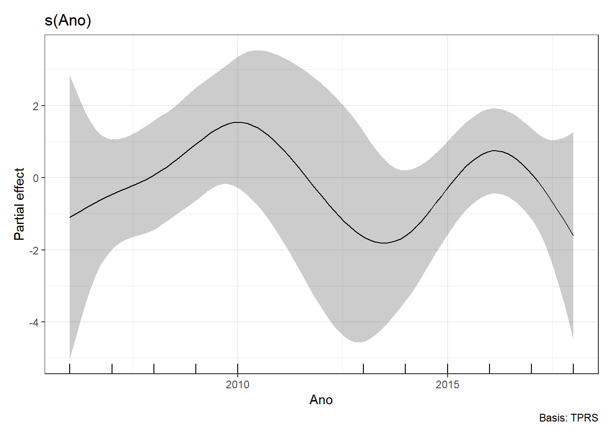
3.6.6.2 Agrupar 1 y >1 observadores

3.6.6.2.1 Convergencia func detec con observadores agrupados
Notese los tamaños muestrales (detecciones dentro de la distancia de truncado trunc.dist_lo) en cada categoria para ajustar esta funcion de deteccion. El tamaño muestral para n_obs== 1 es mucho menor que la categoria > 1.
| nobs_grp | n |
|---|---|
| > 1 | 99 |
| 1 | 9 |
Esta diferencia tan grande en tamaño muestral merece que se le preste un poco mas de atencion.
Debemos prestar atencion al coeficiente de variacion de la estimacion de abundancia que se obtiene usando esta funcion de deteccion: ~6,400,000 % !!!
Summary for distance analysis
Number of observations : 108
Distance range : 0 - 450
Model : Half-normal key function
AIC : 276.1663
Optimisation: mrds (nlminb)
Detection function parameters
Scale coefficient(s):
estimate se
(Intercept) 5.094764 8.034332e-02
nobs_grp1 -2.978671 1.000000e+05
Estimate SE CV
Average p 0.1774802 11357.01 63990.29
N in covered region 608.5184928 38939272.10 63990.29Para ver por que puede estar pasando esto, debemos mirar la matriz hessiana (derivadas segundas de la verosimilitud con respecto al parametro de interes). Una forma simple de concebir la matriz hessiana es pensando en un perfil de verosimilitud de cada parametro: si el perfil muestra curvatura pronunciada, sera sencillo encontrar el parametro de maxima verosimilitud (MLE). Si por otro lado, el perfil es plano, sera myu dificil determinar que un valor del parametro resulta en verosimilitud “mejor” que otro valor del parametro porque al moverse a lo largo del eje x (parametro), el valor de y (verosimilitud) permanece constante.
En la matriz hessiana, valores altos indican que el perfil esta bien definido y por lo tanto podemos confiar en que el valor del parametro es el verdadero MLE. Valores bajos indican que el perfil es plano y por lo tanto no se puede confiar en el valor del parametro estimado.
Estos son los valores de la matriz hessiana:
[,1] [,2]
[1,] 1.549175e+02 3.567116e-14
[2,] 3.567116e-14 3.566837e-14El unico elemento bien definido es el [1,1]. El resto de los valores de la matriz hessiana es cero. Esto significa que el modelo con el que estimamos la funcion de deteccion con n_obs como covariable no convergio y por lo tanto los parametros estimados no son confiables.
Conclusion: no incluir n_obs en la funcion de deteccion
3.7 Conclusión de función de detección
Truncar en trunc.dist_lo: 450m - esto descarta 10 datos (~ 8.5% de los datos)
cutpoints: cutpoints_lo: 0, 50, 150, 250, 350, 450
Half normal
No adjustment term
No covariate
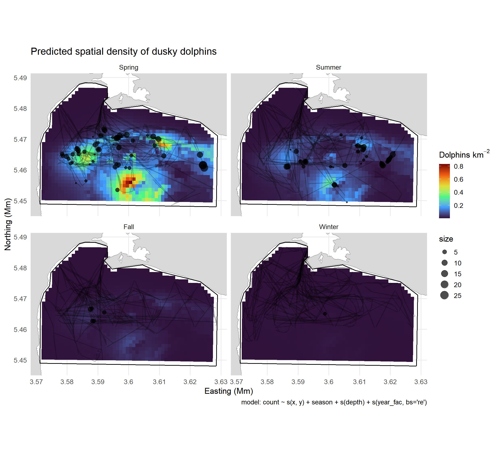
4 Density surface models
Miller et al. (2013):
area of segment j is Aj = 2wlj
lj es la variable segdata$Effort
w es la distancia de truncado trunc.dist_lo: 450m
Los largos de los segmentos lj en el objeto segdata son:
| Largo segmento (m) | n |
|---|---|
| 774 | 1 |
| 790 | 1 |
| 792 | 2 |
| 798 | 1 |
| 799 | 1 |
| 800 | 6282 |
Asumo que los segmentos menores a 800 m son los segmentos que llegan hasta los limites del area de estudio. Para simplificar, y dado que las diferencias son minimas, usare 800 m en todos los segmentos
4.1 Model selection
La columna Dev es la proporcion de deviance explicado por el modelo.
Notese que el modelo que tiene solo posicion + estacion explica el 32% del deviance. La inclusion de año mejora un poco capacidad del modelo, pero la mejora al incorporar las variables ambientales es marginal.
| model | df | AIC | deltaAIC | Dev | p_hat |
|---|---|---|---|---|---|
| count ~ s(x,y) + season + s(Ano) + s(sst) | 31.32 | 1011.59 | 65.22 | 0.38 | 1.3215 |
| count ~ s(x,y) + season + s(Ano) | 30.02 | 1011.98 | 65.61 | 0.38 | 1.3222 |
| count ~ s(x,y) + season + s(Ano) + s(clo) | 31.02 | 1013.47 | 67.10 | 0.38 | 1.3225 |
| count ~ s(x,y) + season + s(Ano) + s(dist.up) | 30.83 | 1014.80 | 68.43 | 0.38 | 1.3235 |
| count ~ s(x,y) + season + s(Ano) + s(VelVert) | 32.21 | 1015.30 | 68.93 | 0.38 | 1.3125 |
| count ~ s(x,y) + season + s(Ano) + s(grad) | 32.70 | 1015.94 | 69.57 | 0.38 | 1.3238 |
| count ~ s(x,y) + season + s(Ano) + s(slope) | 33.68 | 1016.39 | 70.02 | 0.38 | 1.3195 |
| count ~ s(x,y) + season + s(depth) | 26.30 | 1020.60 | 74.23 | 0.34 | 1.3274 |
| count ~ s(x,y) + season + s(Ano) + s(depth) | 27.28 | 1022.76 | 76.39 | 0.34 | 1.3283 |
| count ~ s(x,y) + season | 23.66 | 1024.40 | 78.03 | 0.32 | 1.3279 |
| count ~ s(x,y) + season + s(VelVert) | 24.99 | 1025.75 | 79.38 | 0.33 | 1.3208 |
| count ~ s(x,y) + season + s(sst) | 24.71 | 1026.28 | 79.91 | 0.33 | 1.3287 |
| count ~ s(x,y) + season + s(clo) | 24.67 | 1026.42 | 80.05 | 0.33 | 1.3289 |
| count ~ s(x,y) + season + s(grad) | 26.12 | 1026.84 | 80.47 | 0.33 | 1.3295 |
| count ~ s(x,y) + season + s(slope) | 26.98 | 1027.15 | 80.78 | 0.33 | 1.3260 |
| count ~ s(x,y) + season + s(dist.up) | 24.69 | 1027.30 | 80.93 | 0.32 | 1.3297 |
| count ~ s(x,y) + s(Ano) + s(sst) | 30.51 | 1052.71 | 106.34 | 0.30 | 1.3464 |
| count ~ s(x,y) + s(Ano) + s(VelVert) | 26.63 | 1062.06 | 115.69 | 0.25 | 1.3376 |
| count ~ s(x,y) | 21.74 | 1064.94 | 118.57 | 0.22 | 1.3447 |
| count ~ s(x,y) + s(Ano) + s(depth) | 25.32 | 1065.16 | 118.79 | 0.24 | 1.3405 |
| count ~ s(x,y) + s(Ano) + s(grad) | 25.25 | 1066.90 | 120.53 | 0.24 | 1.3460 |
| count ~ s(x,y) + s(Ano) + s(slope) | 23.21 | 1067.00 | 120.64 | 0.23 | 1.3440 |
| count ~ s(x,y) + s(Ano) | 22.69 | 1067.10 | 120.73 | 0.22 | 1.3461 |
| count ~ s(x,y) + s(Ano) + s(dist.up) | 26.89 | 1068.72 | 122.35 | 0.24 | 1.3431 |
| count ~ s(x,y) + s(Ano) + s(clo) | 23.64 | 1069.16 | 122.79 | 0.22 | 1.3473 |
4.2 Efectos parciales de estacion y año
Estos son los efectos parciales del modelo que incluye posicion, estacion y año.
4.2.1 Estacion
Hay un claro patrón: la densidad es máxima en primavera, y disminuye a lo largo del año
primavera > verano > otoño > invierno
El modelo toma a primavera como baseline, por eso la estimacion del parametro no tiene CI

4.2.2 Año
No hay una tendencia clara, el efecto parcial sube y baja. Probablemente lo mas importante es que el intervalo de confianza siempre incluye cero, lo que indica que el efecto no es estadisticamente significativo. EL termino parece capturar fluctuaciones alrededor de una media

Tabla de ANOVA de este modelo. El termino de posicion tiene pvalue 0.25, el de ano 0.075, y el de estacion es muy pequeno
Family: Tweedie(p=1.322)
Link function: log
Formula:
count ~ s(x, y) + season + s(Ano) + offset(off.set)
Parametric Terms:
df F p-value
season 3 15.31 6.39e-10
Approximate significance of smooth terms:
edf Ref.df F p-value
s(x,y) 15.724 20.055 1.869 0.01066
s(Ano) 5.509 6.607 2.911 0.006094.3 Predicciones de densidad
Estos son mapas de predicciones de densidad en base a 2 modelos:
count ~ s(x,y) + season + s(Ano)
count ~ s(x,y) + season + s(Ano) + s(depth)- el modelo mas parsimonioso
4.3.1 Estación variable
Aqui grafico las predicciones a lo largo de las estaciones, usando 2015 como año de referencia
No veo gran diferencia entre las predicciones de los modelos.
Es muy claro el patron estacional.
Hay 3 focos de densidad de delfines en el area. La disposición espacial de alta densidad de delfines es similar entre las 2 especies, pero no identica
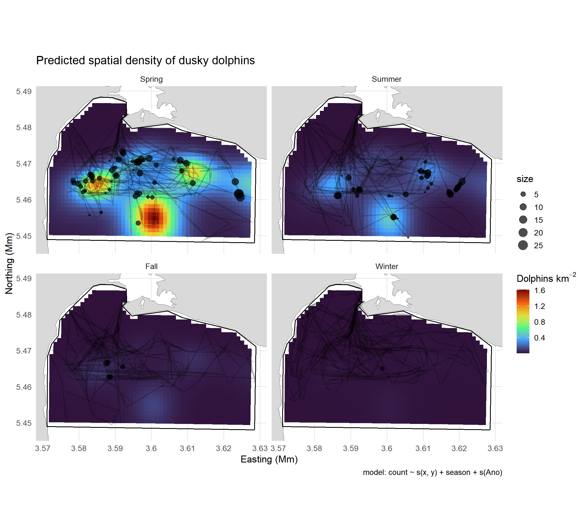

4.3.2 Año variable
Aqui grafico las predicciones a lo largo de los años, usando primavera como estacion de referencia - se pueden producir mapas estacionales + anuales
Se nota el efecto del año, con las intensidades subiendo y bajando a medida que pasan los años
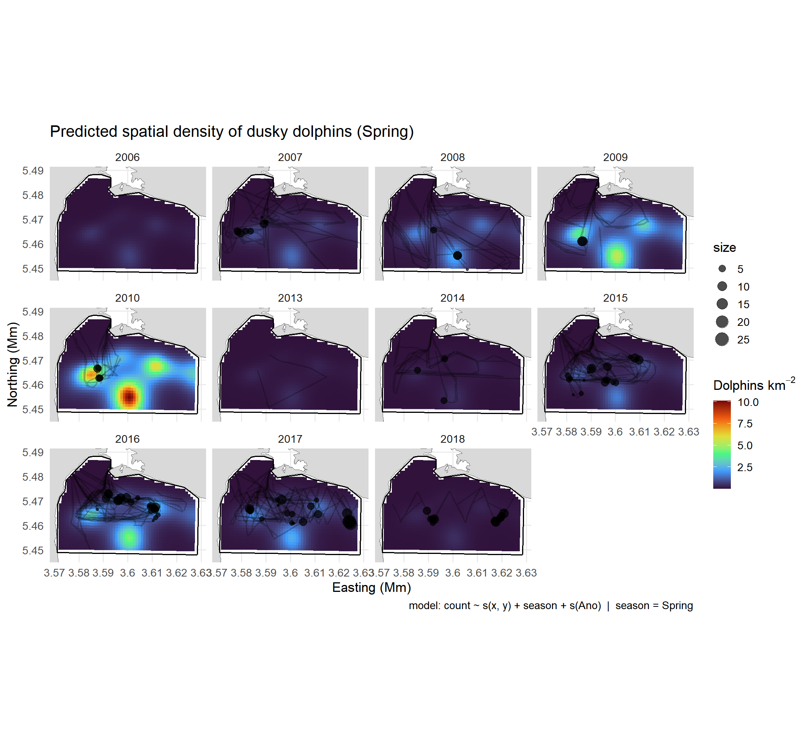
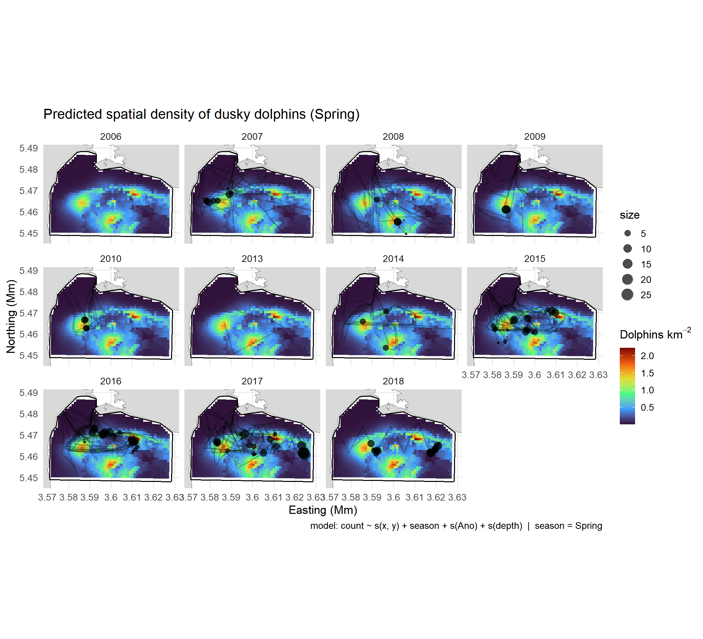
4.3.3 Notas
Los modelos ajustados son aditivos (no hay interaccion entre posicion y año o estación). Por ednde, todos los paneles muestran el mismo patron espacial. Se pueden ajustar modelos DSM con interacciones (e.g. te(x, y, Ano) or s(x, y, by = year_fac)) para que los patrones espaciales tengan variabilidad temporal. No lo hice porque creo que no era parte de los objetivos del paper, pero si fuera algo que te interesa, lo podriamos hacer.
No prepare mapas de la varianza de las estimaciones, pero en caso de querer presentar mapas, es algo que deberiamos hacer. Es sencillo, pero no quiero largarme a hacer mil mapas sin antes discutir que queremos presentar
5 Estimaciones de abundancia
Aqui presento estimaciones de abundancia estimadas usando density surface models (negro) y distance clásico (rojo). Los dos métodos utilizan la misma función de detección.
Nótese que las estimaciones hechas sin el componente espacial son mucho mas variables. Las 2 diferencias entre los modelos son:
- Componente espacial incluido en DSM
- Efecto de año incluido como una funcion smooth
Los ticks menores en el eje x representan las estaciones, en orden: verano, otoño, invierno, primavera.
Se notan claramente los efectos de
- temporada: primavera > verano > otoño > invierno
- Año: oscilaciones, por ej. abundancias mas altas en 2010 y 2017
6 Progreso luego de la reunion con Silvana
En julio 2026 me reuni con Silvana, y acordamos que seria bueno abordar la nota en Section 4.3.3. Esta nota la habia incluido inicialmente por que en los mapas Figure 2 y Figure 1 se ven 3 focos de densidad que son estaticos (i.e. el efecto espacial no es variable a lo largo de los años o estaciones), y uno de esos focos esta en la frontera sur del area de estudio - sugiriendo que esto puede ser un edge effect. Es notable en Figure 2 que no se observaron delfines en todos los focos todos los años. Silvana comentó que en el Golfo Nuevo es común que los delfines oscuros cambien la zona donde se concentran dependiendo del año (trabajo de Garaffo et al.).
Considerando esto, ajuste 4 sets de modelos completos (i.e. equivalente a tabla Table 1). Estos 4 modelos se pueden agrupar en:
- Superficie estática
a. thin plate: modelos presentados mas arriba
b. soap film: Estos modelos respetan los limites y costas con formas irregulares
- Superficies variables en el tiempo
a. Superficies independientes por año (modelos by-year). Unshrunk. Esta es la opción más flexible, no asume estructura espacial compartida entre años. En años con pocos datos, se estiman superficies poco realistas
b. Superficies con informacion compartida entre años (modelos fs, factor smooth). Shrunk. La información de todos los años es usada en la estimación de la superficie, pero ésta varía por año. Se permite que la superficie espacial varíe según el año mediante una base de suavizado por factores, la cual trata ayear_faccomo un factor de agrupación análogo a un efecto aleatorio en un modelo mixto: la desviación espacial de cada año se penaliza hacia un patrón común compartido, utilizando un único parámetro de suavizado para todos los años.
A priori, los modelos 2 Superficies variables en el tiempo parecen ser los que se ajustan más a la descripción de Silvana.
6.1 Model selection
esta es la tabla completa con los 4 tipos de modelos (72 modelos en total)
| basis | model | df | AIC | deltaAIC | Dev | p_hat |
|---|---|---|---|---|---|---|
| thin-plate | count ~ s(x,y,by=year_fac,bs=ts) + year_fac + season + s(depth) | 41.29 | 946.37 | 0.00 | 0.53 | 1.2910 |
| thin-plate | count ~ s(x,y,by=year_fac,bs=ts) + year_fac + season + s(VelVert) | 51.34 | 957.98 | 11.61 | 0.54 | 1.2845 |
| thin-plate | count ~ s(x,y,by=year_fac,bs=ts) + year_fac + season + s(clo) | 48.24 | 966.42 | 20.05 | 0.52 | 1.2930 |
| thin-plate | count ~ s(x,y,by=year_fac,bs=ts) + year_fac + season + s(dist.up) | 50.41 | 975.98 | 29.61 | 0.50 | 1.2745 |
| thin-plate | count ~ s(x,y,by=year_fac,bs=ts) + year_fac + season | 49.23 | 977.92 | 31.55 | 0.50 | 1.2903 |
| thin-plate | count ~ s(x,y,by=year_fac,bs=ts) + year_fac + season + s(sst) | 51.32 | 978.63 | 32.26 | 0.50 | 1.2821 |
| thin-plate | count ~ s(x,y,by=year_fac,bs=ts) + year_fac + season + s(slope) | 52.39 | 980.25 | 33.88 | 0.48 | 1.2702 |
| thin-plate | count ~ s(x,y,by=year_fac,bs=ts) + year_fac + season + s(grad) | 50.63 | 982.23 | 35.86 | 0.50 | 1.2949 |
| thin-plate | count ~ s(x,y,year_fac,bs=fs) + season + s(depth) | 74.43 | 988.26 | 41.89 | 0.57 | 1.2936 |
| thin-plate | count ~ s(x,y,year_fac,bs=fs) + season + s(VelVert) | 72.95 | 991.41 | 45.04 | 0.56 | 1.2872 |
| thin-plate | count ~ s(x,y,year_fac,bs=fs) + season + s(sst) | 80.90 | 996.74 | 50.37 | 0.58 | 1.2928 |
| thin-plate | count ~ s(x,y,year_fac,bs=fs) + season + s(slope) | 76.18 | 1000.61 | 54.24 | 0.56 | 1.2928 |
| thin-plate | count ~ s(x,y,year_fac,bs=fs) + season | 76.93 | 1002.57 | 56.20 | 0.56 | 1.2951 |
| soap | count ~ s(x,y,so) + season + s(Ano) + s(sst) | 31.61 | 1004.98 | 58.61 | 0.39 | 1.3121 |
| thin-plate | count ~ s(x,y,year_fac,bs=fs) + season + s(clo) | 76.29 | 1005.04 | 58.67 | 0.55 | 1.2959 |
| soap | count ~ s(x,y,so) + season + s(Ano) | 30.46 | 1005.19 | 58.82 | 0.39 | 1.3128 |
| thin-plate | count ~ s(x,y,year_fac,bs=fs) + season + s(dist.up) | 68.81 | 1005.60 | 59.23 | 0.53 | 1.3000 |
| thin-plate | count ~ s(x,y,by=year_fac,bs=ts) + year_fac + s(depth) | 45.80 | 1006.26 | 59.89 | 0.44 | 1.3067 |
| soap | count ~ s(x,y,so) + season + s(Ano) + s(clo) | 31.21 | 1006.74 | 60.37 | 0.39 | 1.3135 |
| soap | count ~ s(x,y,so) + season + s(Ano) + s(depth) | 36.17 | 1007.04 | 60.67 | 0.41 | 1.3135 |
| soap | count ~ s(x,y,so) + season + s(Ano) + s(grad) | 32.82 | 1008.28 | 61.91 | 0.39 | 1.3147 |
| soap | count ~ s(x,y,so) + season + s(Ano) + s(VelVert) | 33.21 | 1008.62 | 62.25 | 0.39 | 1.3044 |
| thin-plate | count ~ s(x,y,year_fac,bs=fs) + season + s(grad) | 73.63 | 1008.83 | 62.46 | 0.54 | 1.2978 |
| thin-plate | count ~ s(x,y,by=year_fac,bs=ts) + year_fac + s(VelVert) | 48.24 | 1010.15 | 63.78 | 0.44 | 1.2983 |
| thin-plate | count ~ s(x,y) + season + s(Ano) + s(sst) | 31.32 | 1011.59 | 65.22 | 0.38 | 1.3215 |
| soap | count ~ s(x,y,so) + season + s(Ano) + s(slope) | 34.23 | 1011.88 | 65.51 | 0.39 | 1.3118 |
| thin-plate | count ~ s(x,y) + season + s(Ano) | 30.02 | 1011.98 | 65.61 | 0.38 | 1.3222 |
| thin-plate | count ~ s(x,y) + season + s(Ano) + s(clo) | 31.02 | 1013.47 | 67.10 | 0.38 | 1.3225 |
| thin-plate | count ~ s(x,y,by=year_fac,bs=ts) + year_fac + s(sst) | 44.72 | 1014.45 | 68.08 | 0.40 | 1.2950 |
| thin-plate | count ~ s(x,y) + season + s(Ano) + s(dist.up) | 30.83 | 1014.80 | 68.43 | 0.38 | 1.3235 |
| thin-plate | count ~ s(x,y) + season + s(Ano) + s(VelVert) | 32.21 | 1015.30 | 68.93 | 0.38 | 1.3125 |
| thin-plate | count ~ s(x,y) + season + s(Ano) + s(grad) | 32.70 | 1015.94 | 69.57 | 0.38 | 1.3238 |
| thin-plate | count ~ s(x,y) + season + s(Ano) + s(slope) | 33.68 | 1016.39 | 70.02 | 0.38 | 1.3195 |
| soap | count ~ s(x,y,so) + season + s(depth) | 29.00 | 1019.23 | 72.86 | 0.36 | 1.3193 |
| soap | count ~ s(x,y,so) + season | 23.81 | 1019.32 | 72.95 | 0.33 | 1.3195 |
| thin-plate | count ~ s(x,y) + season + s(depth) | 26.30 | 1020.60 | 74.23 | 0.34 | 1.3274 |
| soap | count ~ s(x,y,so) + season + s(clo) | 24.52 | 1021.05 | 74.68 | 0.33 | 1.3205 |
| soap | count ~ s(x,y,so) + season + s(sst) | 24.83 | 1021.13 | 74.76 | 0.33 | 1.3203 |
| soap | count ~ s(x,y,so) + season + s(grad) | 25.93 | 1021.18 | 74.81 | 0.34 | 1.3219 |
| soap | count ~ s(x,y,so) + season + s(VelVert) | 26.42 | 1022.09 | 75.72 | 0.34 | 1.3131 |
| thin-plate | count ~ s(x,y) + season + s(Ano) + s(depth) | 27.28 | 1022.76 | 76.39 | 0.34 | 1.3283 |
| soap | count ~ s(x,y,so) + season + s(Ano) + s(dist.up) | 16.44 | 1023.82 | 77.45 | 0.29 | 1.3328 |
| soap | count ~ s(x,y,so) + season + s(slope) | 26.61 | 1024.24 | 77.87 | 0.34 | 1.3200 |
| thin-plate | count ~ s(x,y) + season | 23.66 | 1024.40 | 78.03 | 0.32 | 1.3279 |
| soap | count ~ s(x,y,so) + season + s(dist.up) | 27.36 | 1025.39 | 79.02 | 0.34 | 1.3208 |
| thin-plate | count ~ s(x,y) + season + s(VelVert) | 24.99 | 1025.75 | 79.38 | 0.33 | 1.3208 |
| thin-plate | count ~ s(x,y) + season + s(sst) | 24.71 | 1026.28 | 79.91 | 0.33 | 1.3287 |
| thin-plate | count ~ s(x,y) + season + s(clo) | 24.67 | 1026.42 | 80.05 | 0.33 | 1.3289 |
| thin-plate | count ~ s(x,y) + season + s(grad) | 26.12 | 1026.84 | 80.47 | 0.33 | 1.3295 |
| thin-plate | count ~ s(x,y) + season + s(slope) | 26.98 | 1027.15 | 80.78 | 0.33 | 1.3260 |
| thin-plate | count ~ s(x,y) + season + s(dist.up) | 24.69 | 1027.30 | 80.93 | 0.32 | 1.3297 |
| thin-plate | count ~ s(x,y,year_fac,bs=fs) + s(sst) | 78.26 | 1033.65 | 87.28 | 0.52 | 1.3087 |
| thin-plate | count ~ s(x,y,by=year_fac,bs=ts) + year_fac + s(dist.up) | 49.84 | 1037.67 | 91.30 | 0.40 | 1.3123 |
| soap | count ~ s(x,y,so) + s(Ano) + s(sst) | 30.64 | 1042.08 | 95.71 | 0.32 | 1.3377 |
| thin-plate | count ~ s(x,y,year_fac,bs=fs) + s(VelVert) | 82.67 | 1042.18 | 95.81 | 0.51 | 1.3027 |
| thin-plate | count ~ s(x,y,by=year_fac,bs=ts) + year_fac + s(grad) | 51.68 | 1042.73 | 96.36 | 0.40 | 1.3111 |
| thin-plate | count ~ s(x,y,by=year_fac,bs=ts) + year_fac + s(clo) | 38.31 | 1046.12 | 99.75 | 0.33 | 1.3195 |
| thin-plate | count ~ s(x,y,by=year_fac,bs=ts) + year_fac + s(slope) | 52.08 | 1051.45 | 105.08 | 0.38 | 1.3140 |
| thin-plate | count ~ s(x,y) + s(Ano) + s(sst) | 30.51 | 1052.71 | 106.34 | 0.30 | 1.3464 |
| soap | count ~ s(x,y,so) + s(Ano) + s(VelVert) | 28.18 | 1054.89 | 108.52 | 0.28 | 1.3290 |
| thin-plate | count ~ s(x,y,by=year_fac,bs=ts) + year_fac | 52.11 | 1056.09 | 109.72 | 0.38 | 1.3175 |
| thin-plate | count ~ s(x,y,year_fac,bs=fs) + s(depth) | 77.31 | 1058.08 | 111.71 | 0.47 | 1.3085 |
| soap | count ~ s(x,y,so) + s(Ano) + s(dist.up) | 29.17 | 1060.44 | 114.07 | 0.27 | 1.3347 |
| soap | count ~ s(x,y,so) + s(Ano) + s(grad) | 27.21 | 1060.55 | 114.18 | 0.26 | 1.3377 |
| thin-plate | count ~ s(x,y) + s(Ano) + s(VelVert) | 26.63 | 1062.06 | 115.69 | 0.25 | 1.3376 |
| soap | count ~ s(x,y,so) + s(Ano) + s(depth) | 28.96 | 1062.53 | 116.16 | 0.26 | 1.3328 |
| soap | count ~ s(x,y,so) | 25.61 | 1062.93 | 116.56 | 0.25 | 1.3366 |
| thin-plate | count ~ s(x,y) | 21.74 | 1064.94 | 118.57 | 0.22 | 1.3447 |
| soap | count ~ s(x,y,so) + s(Ano) | 26.60 | 1064.99 | 118.62 | 0.25 | 1.3378 |
| soap | count ~ s(x,y,so) + s(Ano) + s(slope) | 26.24 | 1065.07 | 118.70 | 0.24 | 1.3364 |
| thin-plate | count ~ s(x,y) + s(Ano) + s(depth) | 25.32 | 1065.16 | 118.79 | 0.24 | 1.3405 |
| thin-plate | count ~ s(x,y,year_fac,bs=fs) + s(dist.up) | 80.84 | 1066.50 | 120.13 | 0.47 | 1.3118 |
| thin-plate | count ~ s(x,y) + s(Ano) + s(grad) | 25.25 | 1066.90 | 120.53 | 0.24 | 1.3460 |
| thin-plate | count ~ s(x,y) + s(Ano) + s(slope) | 23.21 | 1067.00 | 120.63 | 0.23 | 1.3440 |
| thin-plate | count ~ s(x,y) + s(Ano) | 22.69 | 1067.10 | 120.73 | 0.22 | 1.3461 |
| soap | count ~ s(x,y,so) + s(Ano) + s(clo) | 27.31 | 1067.12 | 120.75 | 0.25 | 1.3389 |
| thin-plate | count ~ s(x,y,year_fac,bs=fs) + s(grad) | 80.14 | 1068.09 | 121.72 | 0.46 | 1.3125 |
| thin-plate | count ~ s(x,y) + s(Ano) + s(dist.up) | 26.89 | 1068.72 | 122.35 | 0.24 | 1.3431 |
| thin-plate | count ~ s(x,y) + s(Ano) + s(clo) | 23.64 | 1069.16 | 122.79 | 0.22 | 1.3473 |
| thin-plate | count ~ s(x,y,year_fac,bs=fs) + s(slope) | 81.43 | 1069.70 | 123.33 | 0.46 | 1.3115 |
| thin-plate | count ~ s(x,y,year_fac,bs=fs) | 81.76 | 1070.43 | 124.06 | 0.46 | 1.3132 |
| thin-plate | count ~ s(x,y,year_fac,bs=fs) + s(clo) | 79.41 | 1079.96 | 133.59 | 0.44 | 1.3157 |
Los modelos mas parsimoniosos son los modelos 2.b. Superficies con informacion compartida entre años
Los modelos 2.a. Superficies independientes por año (modelos by-year) produjeron superficies muy poco realistas comparadas con los avistajes de delfines.
Esta es la tabla de model selection considerando solamente los modelos 2.b. Superficies con informacion compartida entre años . La proporción del deviance explicada por estos modelos es alta (>50%)
| basis | model | df | AIC | deltaAIC | Dev | p_hat |
|---|---|---|---|---|---|---|
| thin-plate | count ~ s(x,y,year_fac,bs=fs) + season + s(depth) | 74.43 | 988.26 | 41.89 | 0.57 | 1.2936 |
| thin-plate | count ~ s(x,y,year_fac,bs=fs) + season + s(VelVert) | 72.95 | 991.41 | 45.04 | 0.56 | 1.2872 |
| thin-plate | count ~ s(x,y,year_fac,bs=fs) + season + s(sst) | 80.90 | 996.74 | 50.37 | 0.58 | 1.2928 |
| thin-plate | count ~ s(x,y,year_fac,bs=fs) + season + s(slope) | 76.18 | 1000.61 | 54.24 | 0.56 | 1.2928 |
| thin-plate | count ~ s(x,y,year_fac,bs=fs) + season | 76.93 | 1002.57 | 56.20 | 0.56 | 1.2951 |
| thin-plate | count ~ s(x,y,year_fac,bs=fs) + season + s(clo) | 76.29 | 1005.04 | 58.67 | 0.55 | 1.2959 |
| thin-plate | count ~ s(x,y,year_fac,bs=fs) + season + s(dist.up) | 68.81 | 1005.60 | 59.23 | 0.53 | 1.3000 |
| thin-plate | count ~ s(x,y,year_fac,bs=fs) + season + s(grad) | 73.63 | 1008.83 | 62.46 | 0.54 | 1.2978 |
| thin-plate | count ~ s(x,y,year_fac,bs=fs) + s(sst) | 78.26 | 1033.65 | 87.28 | 0.52 | 1.3087 |
| thin-plate | count ~ s(x,y,year_fac,bs=fs) + s(VelVert) | 82.67 | 1042.18 | 95.81 | 0.51 | 1.3027 |
| thin-plate | count ~ s(x,y,year_fac,bs=fs) + s(depth) | 77.31 | 1058.08 | 111.71 | 0.47 | 1.3085 |
| thin-plate | count ~ s(x,y,year_fac,bs=fs) + s(dist.up) | 80.84 | 1066.50 | 120.13 | 0.47 | 1.3118 |
| thin-plate | count ~ s(x,y,year_fac,bs=fs) + s(grad) | 80.14 | 1068.09 | 121.72 | 0.46 | 1.3125 |
| thin-plate | count ~ s(x,y,year_fac,bs=fs) + s(slope) | 81.43 | 1069.70 | 123.33 | 0.46 | 1.3115 |
| thin-plate | count ~ s(x,y,year_fac,bs=fs) | 81.76 | 1070.43 | 124.06 | 0.46 | 1.3132 |
| thin-plate | count ~ s(x,y,year_fac,bs=fs) + s(clo) | 79.41 | 1079.96 | 133.59 | 0.44 | 1.3157 |
Similar al caso Table 1, añadir covariables ambientales implica una mejora marginal en la proporcion de deviance explicada: 57% explicada por el modelo mas parsimonioso (incluye profundidad) contra 56% explicada por el modelo que incluye solo la superficie espacial variable por año y estación.
En lo que continua, persentare los resultados del modelo que excluye variables ambientales.
6.2 Efectos parciales de estacion, año y efecto espacial
6.2.1 Estacion
Hay un claro patrón: la densidad es máxima en primavera, y disminuye a lo largo del año
primavera > verano > otoño > invierno
El modelo toma a primavera como baseline, por eso la estimacion del parametro no tiene CI
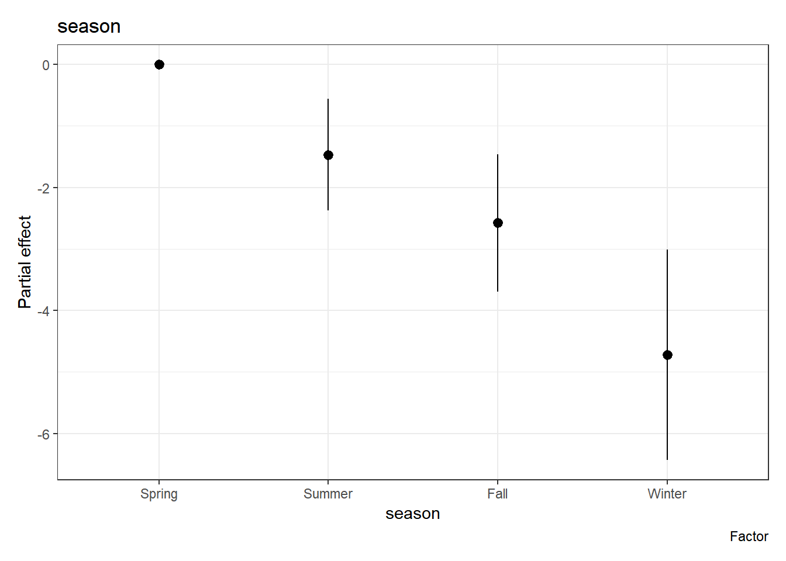
6.2.2 Año
Estos modelos no tienen termino año como variable, si no que computa diferentes superficies espacials por año. Para obtener un equivalente de effecto parcial de año, se evalua la contribucion parcial de la superficie smooth para un set de locaciones y luego se obtiene un promedio anual - en aquellos años que tienen pocos datos el efecto de año es atraido fuertemente hacia la gran media (shrunk)
Es claro que no hay tendencia en la abundancia de delfines oscuros en el area de estudio

6.2.3 Espacio
Este efecto parcial muestra como los focos de densidad cambiaron a lo largo de los años
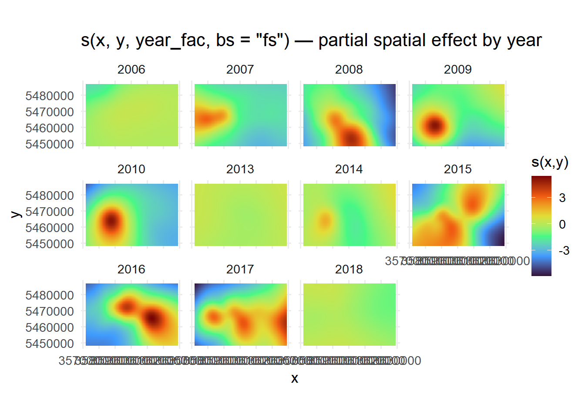
6.3 Predicciones de densidad
6.3.1 Año variable
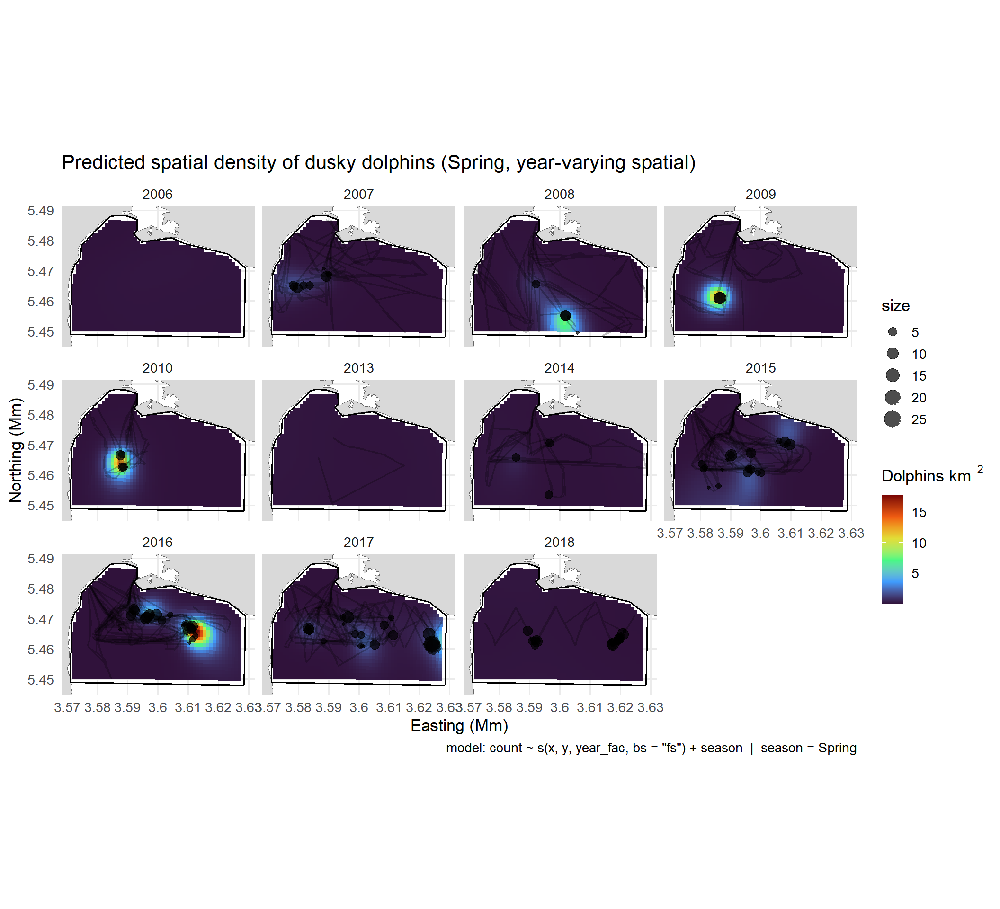
6.3.2 Estacion variable
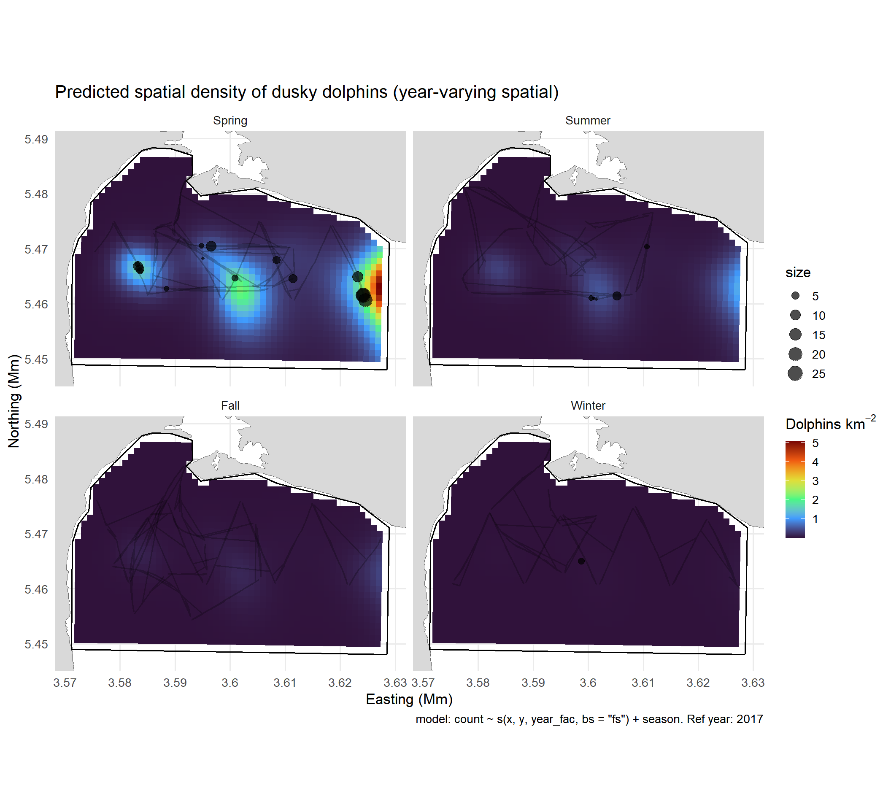
6.4 Estimaciones de abundancia
6.5 Mapas de coeficiente de variacion (CV)
Aqui grafico el mapa de las estimaciones de CV=SD/mean, analogo al mapa 5 presentado en Miller et al. (2013)
La mayor variabilidad en las estimaciones de abundancia ocurren en lugares donde no hubo cobertura de surveys
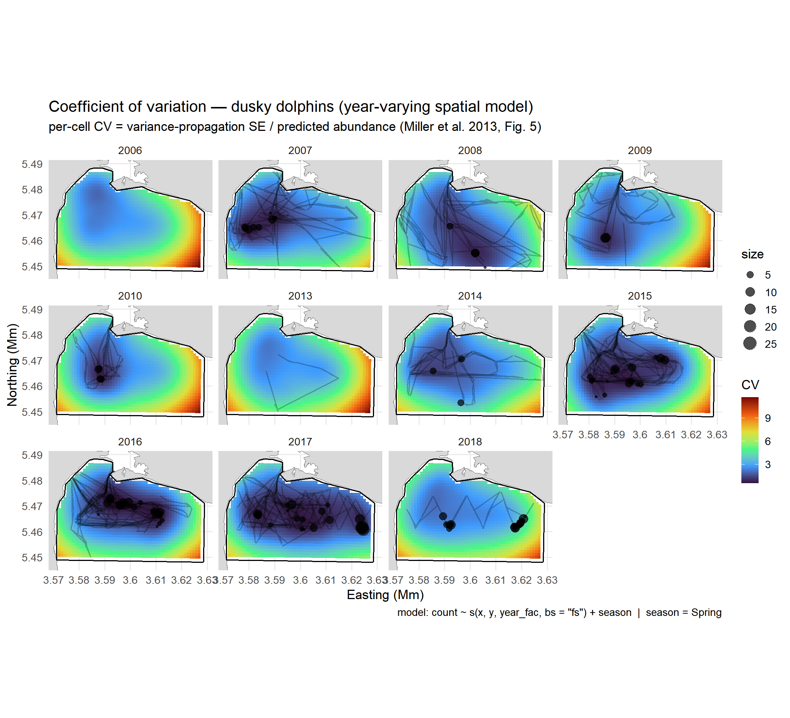
7 Separar efecto del tiempo del numero de observadores
Durante agosto 2026 mantuvimos reuniones con el grupo de trabajo: Silvana Dans, Guillermo Svendsen, Alejandro Buren, Mariano Coscarella y Agustin Luzzenti. Silvana y ADB presentaron los resultados obtenidos hasta ese momento.
De esa reunión surgieron 2 temas que el equipo de trabajo considero importante abordar:
- Velocidad Vertical : inlcusión de Velocidad Vertical de agua como covariable en los modelos DSM. Esta variable indica upwellings (velocidades positivas)/downwellings (velocidades negativas). Guille calculo promedios climatologicos (medias mensuales). La inclusión de esta variable fue hecha del mismo modo que la inclusión del resto de las variables ambientales a los DSMs. Su inclusión no mejoró la capacidad de explicación de los modelos.
- Número de observadores : dado que los surveys que informan este analisis se hicieron con una multiplicidad de objetivos (es decir, no fueron diseñados especificamente como surveys para estimar abundancia), el numero de observadores, y el comportamiento de los observadores, vario con el tiempo. Los surveys mas tempranos se hicieron con solo un observador (Guille), y luego se sumaron mas observadores. Dada esta tendencia: bajo numero de observadores al principio, aumento de observadores luego, es posible que el efecto del tiempo estimada por los DSM (nula para LO) sea en parte resultado del aumento de observadores. Dado que el efecto estimado de año es nulo para LO, existe la posibilidad que el aumento en el numero de observadores este enmascarando una potencial caide en la abundancia de LO en el area.
Para abordar este problema, Guille y Silvana revisaron las planillas en papel de cada survey y establecieron la variable “Numero efectivo de observadores”. Es decir, en algunas salidas hubo hsata 6 personas a bordo de la embarcacion, pero no todos fueron parte del esfuerzo de observacion de delfines.
Aqui se grafica el numero efectivo de observadores (n_obs) a lo largo del tiempo (cada punto representa una salida)
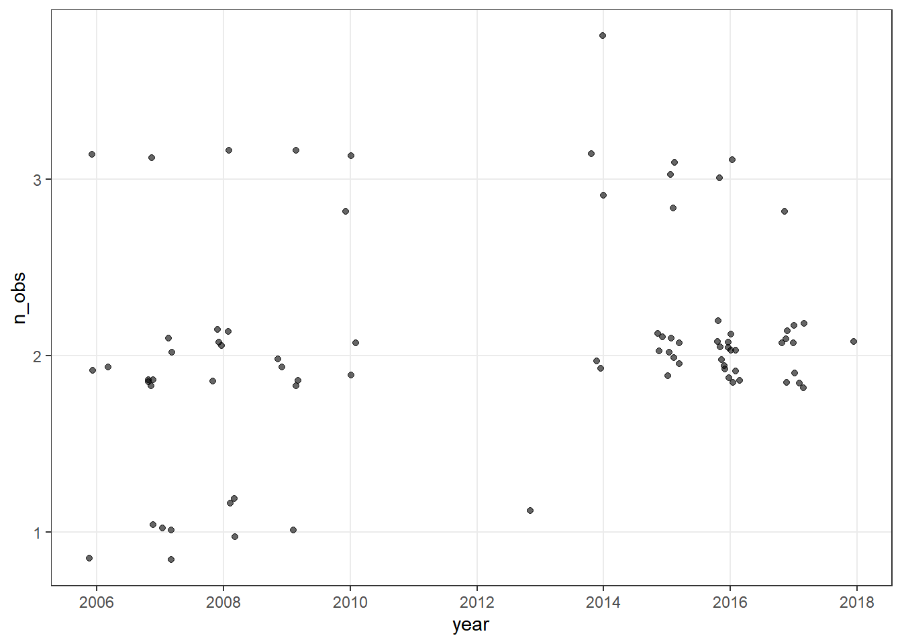
7.1 Estrategias
Consideramos 3 estrategias independientes:
- Incorporar la variable
n_obsa la funcion de detección
- Incorporar la variable
n_obsa los modelos DSM
- Analisis de sensibilidad. Ajustar el mejor modelo (DSM soap model, con año y estación como covariables), usando sólo las salidas donde
n_obs=2, y comparar la tendencia del efecto parcial de la variable año entre este modelo y la del modelo ajustado usando todos los datos.
7.1.1 Incorporar la variable n_obs a la funcion de detección
Este ejercicio es presentado en Section 3.
Ver particularmente la explicacion de la falta de convergencia de la funcion de deteccion en Section 3.6.6.2.1.
Esta estrategia no fue adoptada por los problemas de convergencia descriptos y porque dado que n_obs == 1 ocurre solo en el periodo 2006-2010, y n_obs es casi siempre 2 a partir de 2015. Es decir que el numero efectivo de observadores no esta simplemente correlacionado con año, es casi una “step function” de año. Esto quiere decir que en caso de incluir n_obs en la funcion de deteccion, su coeficiente en realidad va a codificar “periodo”, que es la misma informacion que codifica la variable año en el DSM.
Como conclusion, incluir n_obs en la funcion de deteccion no nos permitiria separar el efecto de año del efecto del numero de observadores
7.1.2 Incorporar la variable n_obs a los modelos DSM
Este ejercicio consideraba incluir n_obs al DSM,
count ~ s(x, y, year_fac, bs = "fs") + season + n_obs + ...
en lugar de incorporarla a la funcion de deteccion.
Esta estrategia no fue implementada por dos razones:
n_obses una covariable de detectabilidad (es decir afecta si un animal fue detectado), no una covariable de densidad (el numero de observadores no afecta la cantidad de animales presentes en el area)
n_obses una “step function” de año. Por ende, incluir el efecto de años(x, y, year_fac, bs = "fs")yn_obsen el mismo DSM no va a permitir separar la variabilidad explicada por cada una de las variables.
7.1.3 Analisis de sensibilidad
En esta estrategia, mantuvimos n_obs constante. Por ende, removemos el efecto de n_obs de los resultados, en lugar de intentar modelarlo. De esta manera, si encontramos que no hay tendencia a lo largo del tiempo es evidencia de que esto es real y no un artefacto del numero variable de n_obs (es decir que el aumento de n_obs no esta enmasarando una caida en la abudancia). Por el contrario, si el efecto de año es distinto al efecto encontrado usando todos los datos, esto indicaria que la tendencia es, al menos parcialmente, un artefacto del numero variable de n_obs.
Procedimiento:
Usando la funcion de deteccion sin covariables, ajustamos nuevamente el modelo ccount ~ s(x, y, year_fac, bs = "fs") + season, utilizando solo las detecciones donde n_obs==2.
Elegimos n_obs==2 porque es el numero de observadores efectivos mas consistente a lo largo del tiempo
Esta tabla presenta el numero de detecciones totales, y las detecciones usando n_obs==2
| Ano | n_total | n_obs2 | pct_obs2 |
|---|---|---|---|
| 2006 | 154 | 49 | 31.8 |
| 2007 | 660 | 387 | 58.6 |
| 2008 | 644 | 260 | 40.4 |
| 2009 | 356 | 265 | 74.4 |
| 2010 | 279 | 129 | 46.2 |
| 2013 | 39 | 0 | 0.0 |
| 2014 | 489 | 235 | 48.1 |
| 2015 | 1059 | 764 | 72.1 |
| 2016 | 1276 | 1088 | 85.3 |
| 2017 | 1188 | 1075 | 90.5 |
| 2018 | 144 | 144 | 100.0 |
Este grafico muestra el equivalente del efecto parcial de año (para ver una explicacion de porque no se puede estimar el efecto parcial directamente ver Section 6.2.2) en el modelo DSM usando todas las detecciones (rojo), y solo las detecciones donde n_obs==2 (celeste).
Los efectos parciales de los dos modelos se solapan casi completamente.
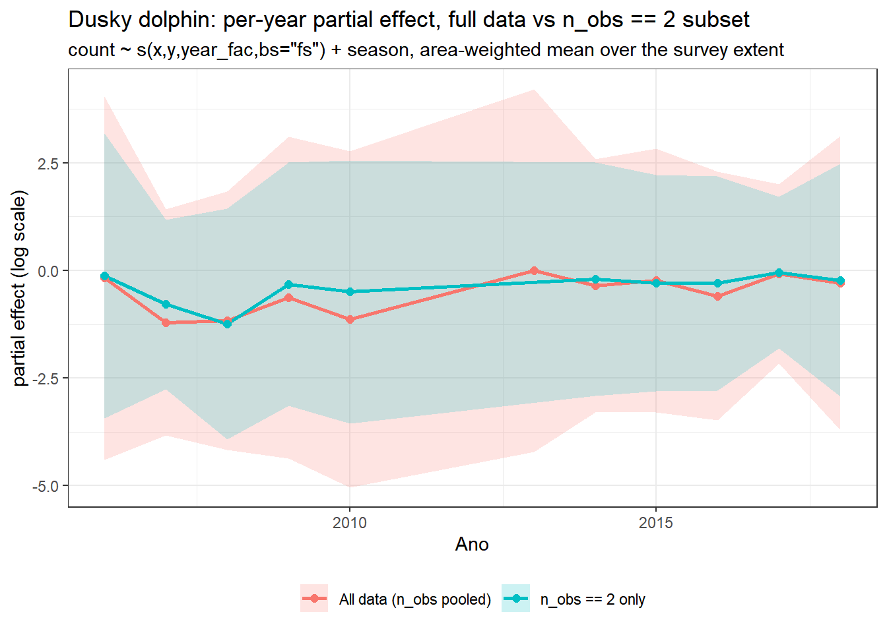
Este grafico muestra el efecto parcial de season en el modelo DSM usando solo las detecciones donde n_obs==2 (celeste en el grafico anterior). Este efecto es consistente con lo que encontramos antes
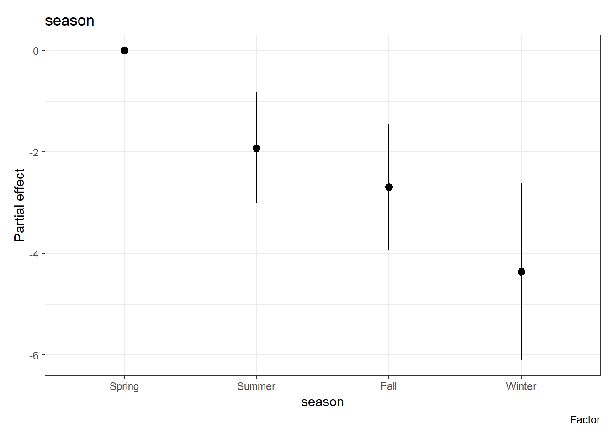
Estos son los mapas estimados usando el modelo DSM usando solo las detecciones donde n_obs==2
Estos mapas son consistentes con los mapas obtenidos usando todos los datos - esperable dada la proporcion de detecciones donde n_obs==2 (ver tabla). La unica inconsistencia pareca estar en la primavera de 2017, donde el modelo usando n_obs==2 estima un foco de densidad en el limite sureste del area de estudio, y en la primavera del 2016 donde el foco sureste tiene una extension espacial mayor que en el modelo con todos los datos. Esto necesariamente tiene que ser un artefacto de un modelo al que le falta informacion.
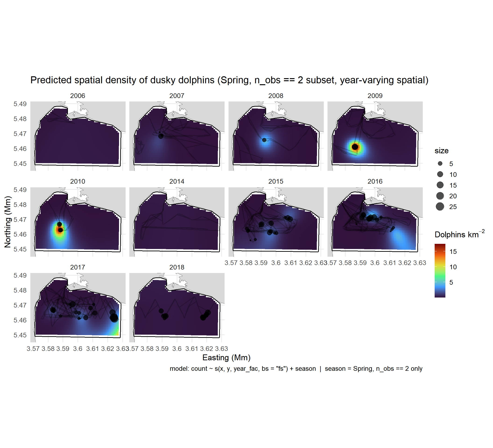
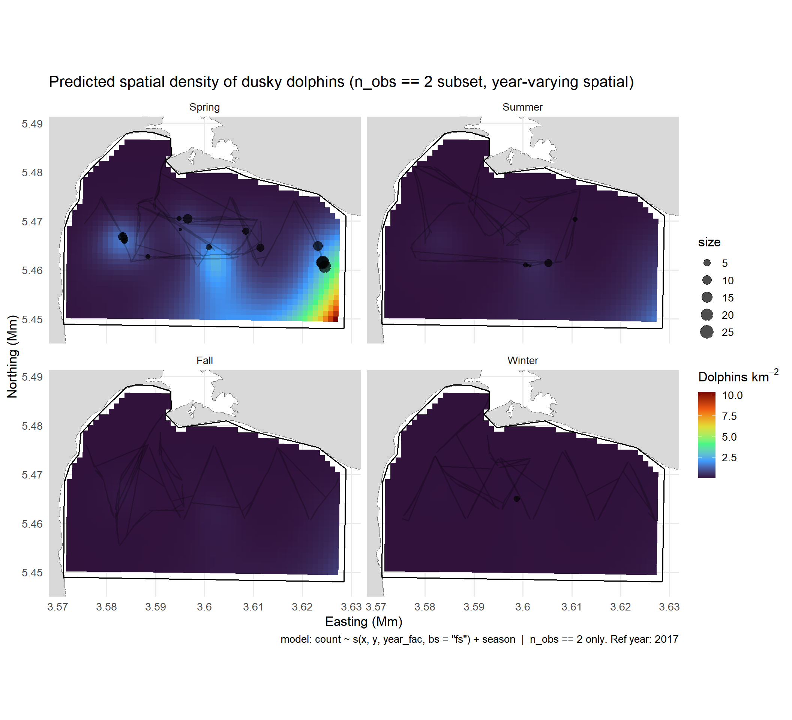
7.2 Conclusion de Separar efecto del tiempo del numero de observadores
La tendencia nula estimada en la abundancia de delfines oscuros en el area de estudio parece ser real, y no un artefacto del numero variable de observadores.
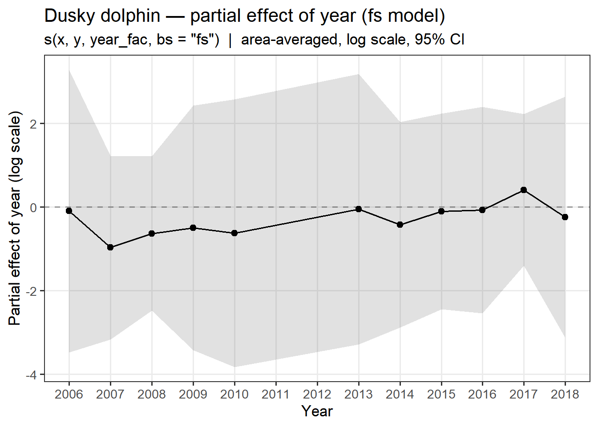
8 Referencias
Buckland ST, Anderson DR, Burnham KP, Laake JL, Borchers DL, Thomas L (2001) Introduction to distance sampling: Estimating abundance of biological populations. Oxford University Press, Oxford.
Buckland ST, Rexstad EA, Marques TA, Oedekoven CS (2015) Distance sampling: Methods and applications. Springer, Cham.
Miller DL, Burt ML, Rexstad EA, Thomas L (2013) Spatial Models for Distance Sampling Data: Recent Developments and Future Directions. Methods in Ecology and Evolution 4:1001–1010.